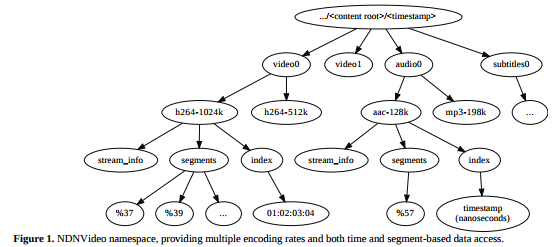

2017/07/27 - (Paper) Video Streaming over Named Data Networking¶
IEEE COMSOC MMTC E-Letter
Derek Kulinski, UCLA Computer Science, kulinski@cs.ucla.edu Jeff Burke, UCLA REMAP, jburke@remap.ucla.edu Lixia Zhang, UCLA Computer Science, lixia@cs.ucla.edu
Full Content : Link , page 6 to 9.
Introduction¶
Benefits of video streaming over NDN :
- Reducing bandwidth
- Improving performance
- Video consumers can simply request specific video content by names to seek.
Design Goals¶
Design goals in this paper :
- Quality consistent with current Internet video expectations
- Simple , low-latency random access into streams, based on actual location in the video stream , using a timecode-based namespace (i.e., the hour, minute, second, and frame of the stream).
- Consumer-side synchronization of streams using the timecode-based namespace, and scalability without impact on the original source of video.
- On-the-fly archival of live streams, making them indistinguishable from pre-recorded streams for the purposes of most playback applications.
Architecture¶
The NDNVideo protocol has two types of participants : publisher and consumer.
The publisher simply prepares data packets, signs them , and stores them in a repository (persistent store) for retrieval by consumers.Consumer no longer need to establish a session with the publisher , nor inform the publisher about their Quality of Servis(QoS). Consumers are in full control of how much data they receive, and at what rate.
During packet preparation, the video producer segments the stream using semantically meaningful names, e.g. frames for video and samples for audio, . Namespace shows in Figure 1.
Packet format¶
NDNVideo handles large(video) and small(audio) samples by packing data in two layer.
- Inner layer : All information necessary for the playback of a data buffer, such as timestamp, duration, and length in bytes. The timestamp tells the player at what point in time the buffer is supposed to be played.
- Outer layer : Offset and count. The count indicates how many buffer begin in a given packet, and the offset is used to tell where the first buffer starts.
Random access¶
NDN’s Interest selector fields enable a consumer to express requests that are more sophisicated than just name prefixes.
The Exclusion Filter is used to tell the network to return the latest index entry.
Live Streaming¶
Video publisher simply puts frames in a network-addressable content repository immediately after capture.
Because different nodes can have different data in their Content Store, the same request might result in different responses from different nodes.
- The consumer first issues Interests periodically during its video playback to determine the ever-increasing duration of the stream, by checking for the latest entry in the index namespace. It set the exclusion filter in the Interest packet to only request Data packets with index name components greater than the last index it has seen.
- To enable the consumer to determine the rate at which it should issue Interests, in addition to the timestamp of the buffer, each individual packet also contains a local time at whitch the packet was generated.
Handling Packet Loss¶
Each data packet is named with the segment name plus segment numbers to make the data names predictable and enable the consumer to pipline requests for the data.
In order to provide seamless playback, it is important for the consumer to know how long to wait assuming that an Interest or the corresponding data packet is lost.
Current Issue and future work¶
The CCNx repository dose not yet support deletion of specific data object, which can be problematic for long-running live streams.
My Summary¶
As we know, video streaming in NDN is a huge problem because every node (or router) may store the data in local content store, and this is not a good solution when many users are watching many videos at the same time. And in this paper , it did not mention how to solve this problem.
The focus of this paper is all about naming the data segments uniquely, so that consumers can send Interest precisely to pull what data they desire , and consumers can control everything without any other Protocols support.
After reading this paper, I think there is still many problem in the issue of video streaming over NDN, they just find a feasible way to get the streaming. Benefits, such as improving performance and reducing bandwidth, this paper just show them in session 1 and not proving how to do it.
Reference¶
| [1] | GStreamer : https://gstreamer.freedesktop.org/ |